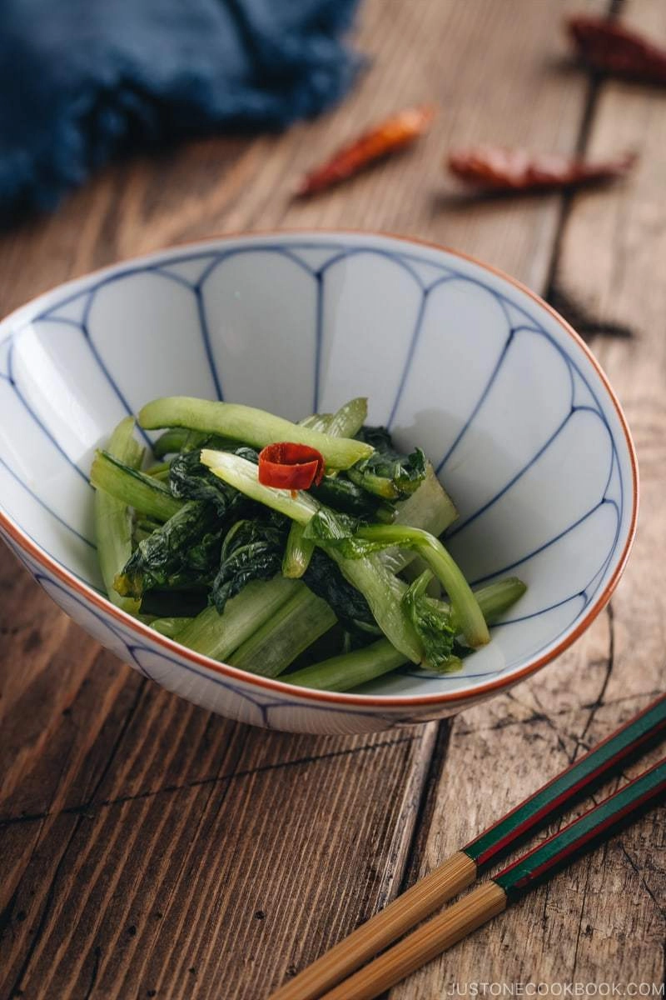

Description
Shouyuzuke or Soy Sauce Pickling is one of the easiest Tsukemono (Japanese pickles ) you can make at home! Pickle fresh seasonal vegetables and serve along with your Japanese meal.
Pickling may come across as a tedious undertaking for any beginners, but you’ll be surprised how easy it is once you give it a try. In the world of Japanese pickles, you can start out by experimenting with some of the simplest pickling methods like Shouyuzuke (醤油漬け).
1 lb Komatsuna or any leafy greens
1 red chili pepper
2 Tbs sugar
1/4 cup soy sauce
1 1/2 Tbs rice vinegar (unseasoned)
Instructions
Gather all the ingredients. Important: Measure the weight of the vegetables. You will need a heavy object (and a plate) that's 1.5-2 times the weight of the vegetable.
Cut the greens into 2-inch (5 cm) pieces. Chop 1 red chili pepper into smaller pieces. If you want mild spiciness, discard the seeds.
Add the greens in a one-gallon glass jar (or any big container).
Add the chopped red chili pepper, 2 Tbsp sugar, ¼ cup soy sauce, 1 ½ Tbsp rice vinegar.
WIth your hands (covered with plastic gloves), mix everything together well.
Place a flat plate on top of the greens and then put a weight (1.5-2 times the weight of vegetable) on top of the plate. I used a mason jar with water.
Close the lid (or cover with a plastic wrap) and set aside at room temperature for 6 hours.
Squeeze the liquid out and transfer it to an airtight container.
To Store
Store Shouyuzuke in the refrigerator for up to a week.